Unitat 1 · Fonaments de l’Administració de Sistemes
Administració i Manteniment de Sistemes i Aplicacions (AMSA)
Objectius d’aprenentatge
- Descriure què és l’Administració de Sistemes i quin és el rol de la persona que l’exerceix.
- Identificar les tasques i responsabilitats típiques d’un administrador de sistemes, incloent-hi els perfils moderns (DevOps, SRE) en què pot evolucionar aquest rol.
Què significa que un sistema «funciona»?
Aquesta és la pregunta clau que ens acompanyarà durant tota la unitat i que ens ajudarà a entendre què és l’administració de sistemes.
Un sistema funciona quan…
- està disponible quan l’usuari el necessita
- té un rendiment adequat
- és segur davant d’accessos i atacs
- és fiable, sense fallar constantment
- pot créixer (escalar) si cal
- es pot mantenir al llarg del temps
Què és l’Administració de Sistemes?
L’administració de sistemes és la disciplina tècnica que implica la configuració, la gestió, la supervisió i el manteniment continu d’infraestructures informàtiques (servidors, xarxes, emmagatzematge de dades, programari, seguretat, etc.), per garantir la seva disponibilitat, rendiment, seguretat i funcionalitat, amb l’objectiu de satisfer les necessitats operacionals i estratègiques de l’organització.
Un administrador és una persona que té cura, gestiona o dirigeix els béns o els interessos d’una altra persona o entitat. En aquest cas, configurar, gestionar, supervisar i mantenir sistemes informàtics.
Què és un sistema?
Un sistema és un conjunt d’elements interconnectats que treballen junts per aconseguir un objectiu comú. El Sistema Informàtic està format per maquinari, programari, dades, xarxes, persones, etc., que treballen junts per processar informació.
Què hem de garantir en un sistema?
- Disponibilitat: proporció del temps en què el servei és operatiu i accessible.
- Es pot expressar com a percentatge o uptime.
- Rendiment: com respon el sistema davant una càrrega concreta.
- Latència, throughput, IOPS, temps de resposta, utilització de CPU/memòria.
- Seguretat: protegir el sistema i la informació segons la tríada CIA:
- Confidencialitat: només hi accedeixen els autoritzats.
- Integritat: la informació no és alterada indegudament.
- Disponibilitat: els recursos són accessibles quan es necessiten.
- Funcionalitat: el sistema fa allò que els requisits especifiquen.
- Es verifica amb requisits i proves d’acceptació, no amb una única mètrica.
No existeix una única mètrica de rendiment ni una única mètrica de seguretat: primer cal definir què volem observar i quin objectiu volem assolir.
Com mesurem el rendiment?
- Latència: temps que triga una operació a completar-se.
- Throughput: quantitat de treball processat per unitat de temps.
- IOPS: operacions d’entrada/sortida per segon.
- Utilització: percentatge de capacitat consumida d’un recurs.
- Temps de resposta: latència percebuda pel client.
- Errors / saturació: senyals que el sistema no pot assumir la càrrega.
Un servidor pot tenir baixa utilització de CPU i, alhora, una latència molt alta perquè el coll d’ampolla és la xarxa, el disc o una dependència externa.
Percentils de latència
- p50 — mediana; representa l’experiència típica.
- p95 — el 5% de les peticions és més lent.
- p99 — l’1% de les peticions és més lent.
- p99.9 — el 0,1% de les peticions és més lent.
Si definim: 99,9% de les peticions en menys de 200 ms, estem establint, un objectiu equivalent a p99.9 ≤ 200 ms, sempre que la finestra temporal i la població mesurada estiguin definides de la mateixa manera.
Quines són les necessitats a satisfer?
Operacionals
Condicions necessàries perquè el servei funcioni avui:
- disponibilitat i SLO
- rendiment i capacitat
- seguretat i control d’accés
- còpies de seguretat i recuperació
- monitorització i resposta a incidents
Estratègiques
Decisions que permeten que el sistema continuï sent viable demà:
- escalabilitat i creixement
- costos i eficiència
- mantenibilitat i automatització
- adaptació a nous requisits
- continuïtat del negoci i compliment normatiu
Una definició més completa
L’administració de sistemes no consisteix només a gestionar màquines.
És la disciplina tècnica que implica la configuració, gestió, supervisió i manteniment continu d’infraestructures informàtiques (servidors, xarxes, emmagatzematge de dades, programari, seguretat, etc.) així com la coordinació de les persones usuàries, polítiques, procediments i dades associades, per garantir la disponibilitat, rendiment, seguretat i funcionalitat del sistema, amb l’objectiu de satisfer les necessitats operacionals i estratègiques de l’organització.
Infraestructura + Persones + Processos + Dades + Polítiques
Analogia amb Matrix
Quants de vosaltres heu vist la pel·lícula Matrix?
- Qui controla el sistema?
- Qui coneix el sistema per dins?
- Qui és capaç de canviar-lo sense que la resta ho noti?

Evolució
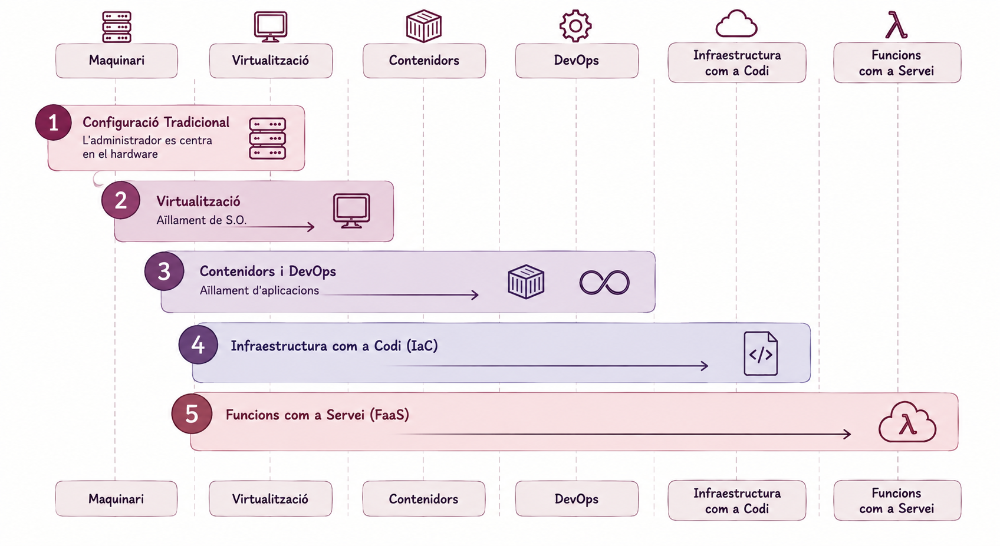
Sortides Professionals
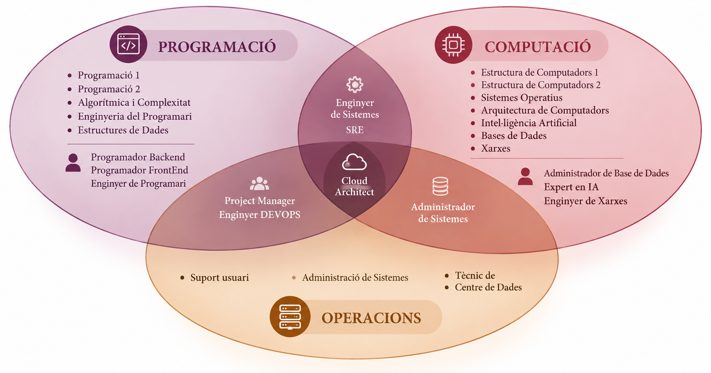
La feina de l’administrador de sistemes
El rol de l’administrador de sistemes - Similituds amb un bomber
Els administradors de sistemes han de tenir coneixements tècnics profunds i una actitud proactiva per anticipar problemes i, si cal, resoldre’ls sota pressió, tal com ho faria un bomber en una emergència.
El rol de l’administrador de sistemes - Similituds amb un científic
- Els administradors de sistemes han de ser capaços de resoldre problemes complexos i trobar solucions creatives.
- Això pot ser semblant al treball d’un científic, que ha de plantejar hipòtesis, realitzar experiments i analitzar dades per arribar a conclusions.
Per exemple, una empresa pot necessitar donar codis d’accés temporals als usuaris per connectar-se a la xarxa Wifi. En lloc de gestionar-ho manualment, un administrador de sistemes va crear un sistema que generava codis d’accés temporals quan els usuaris tocaven un plàtan connectat a un Raspberry Pi.
Salari Administrador de Sistemes
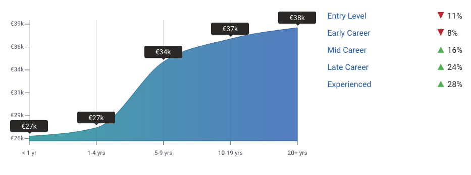
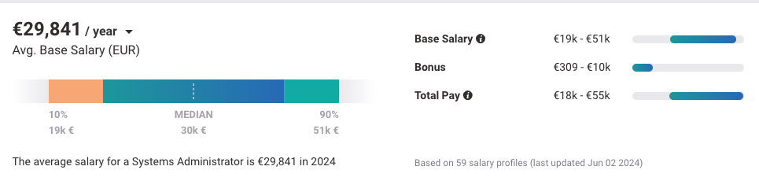
Especialitzacions en Administració de Sistemes
- Administradors de Xarxa, Emmagatzematge, Seguretat
- Operadors de Xarxa
- Arquitectes de Sistemes
- Tècnics de Suport
- Tècnics de Centre de Dades
- Enginyers de Sistemes
- Enginyer DEVOPS
- Enginyer SRE (Site Reliability Engineer)
Què és un Site Reliability Engineer (SRE)?
Els Site Reliability Engineers (SRE) són enginyers que apliquen principis de programari i d’enginyeria a l’operació de serveis, amb un focus explícit en fiabilitat, disponibilitat, latència, rendiment i capacitat. L’automatització i el programari són mitjans per reduir el treball manual i fer que l’operació escali amb el servei.
- Fiabilitat del Sistema: Nagios, Zabbix, Prometheus.
- Escalabilitat: Kubernetes, Docker, Terraform.
- Monitorització i Alertes: Grafana, ELK Stack, PagerDuty.
- Gestió d’Incidents: Jira, ServiceNow, Slack.
- Optimització de Rendiment: New Relic, Datadog, AppDynamics.
- Automatització de Processos: Ansible, Puppet, Chef.
Salari d’un Site Reliability Engineer
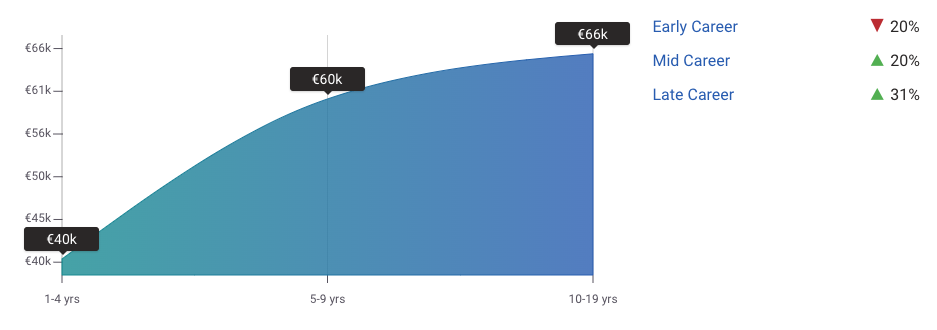
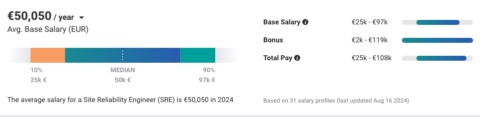
Com mesurem la fiabilitat?
SLI
Service Level Indicator
Què mesurem.
La mètrica concreta observada (p. ex. % de peticions correctes).
SLO
Service Level Objective
Quin nivell volem.
L’objectiu intern de fiabilitat (p. ex. 99,9% de peticions correctes).
SLA
Service Level Agreement
Què comprometem.
L’acord (sovint contractual) amb el client; pot establir compensacions si no es compleix.
Si l’SLO és 99,9%, el marge que queda fins al 100% (0,1%) és el teu pressupost d’error (error budget): quant et pots permetre fallar abans d’incomplir l’objectiu.
Què és un DevOps Engineer?
Els DevOps Engineers són professionals clau en la integració i col·laboració entre els equips de desenvolupament (Dev) i operacions (Ops), amb l’objectiu principal de millorar l’eficiència i agilitat dels processos de desenvolupament de programari. El seu treball se centra en accelerar el desplegament d’aplicacions, millorar la qualitat del programari i optimitzar els fluxos de treball, fent ús intensiu de l’automatització, la integració contínua (CI) i el lliurament continu (CD).
- Automatització: Jenkins, GitLab CI, Bamboo.
- Gestió d’infraestructura com a codi (IaC): Terraform, Ansible, CloudFormation.
- Contenidors i orquestració: Docker, Kubernetes.
- Monitorització i registre: Prometheus, Grafana, ELK Stack.
- Col·laboració i comunicació: Slack, Jira, Confluence.
Salari d’un DevOps Engineer
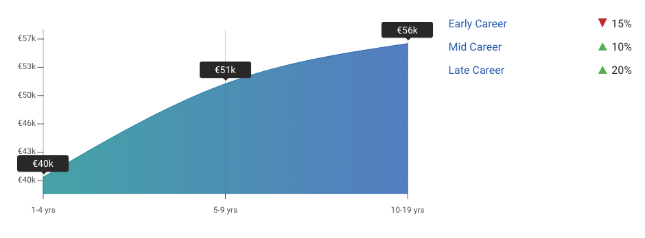
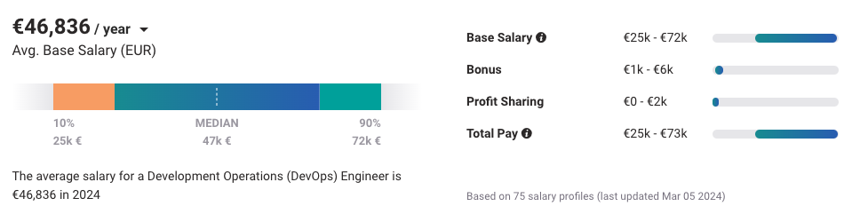
DevOps vs SRE
DevOps
Com col·laborem i lliurem software?
SRE
Com aconseguim que els serveis siguin fiables a escala?
Les fronteres entre aquests perfils i el sysadmin tradicional són cada vegada menys rígides.
Terminologia bàsica
Arquitectura Client-Servidor
Una arquitectura client-servidor involucra uns sistemes que necessiten serveis i uns servidors que processen i responen a aquestes peticions.
Client
Un ordinador o dispositiu capaç de rebre informació o utilitzar un servei o proveïdor.
Servidor
Un ordinador o dispositiu remot capaç de proveir accés a un servei o a informació.
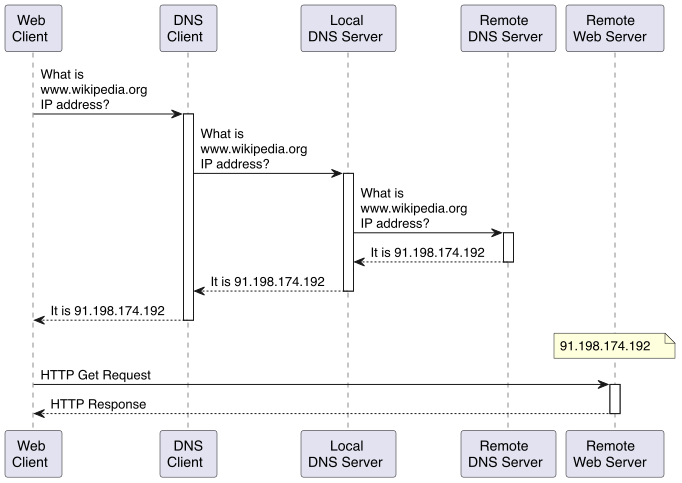
Client i servidor descriuen rols dins d’una comunicació, no tipus de màquina. Un mateix sistema pot actuar com a client i com a servidor simultàniament.
Característiques Client-Servidor
Avantatges
- Sistema centralitzat → Totes les dades en un lloc.
- Polítiques de recuperació de dades.
- Separació de la lògica.
Limitacions del disseny centralitzat
- Punt únic de fallada (single point of failure): si el servidor cau, tots els clients perden el servei alhora.
- Coll d’ampolla d’escalabilitat: el servidor ha de créixer (o replicar-se) per atendre més clients; el rendiment del sistema depèn de la seva capacitat.
- Concentració de recursos: tota la lògica i les dades depenen d’un mateix punt.
La concentració de dades i lògica en un punt també fa del servidor un objectiu atractiu per a atacs: denegació de servei (DoS), man-in-the-middle, phishing o usurpació d’identitat (spoofing). Cal autenticació, autorització i xifratge per mitigar-ho —qüestions que no són exclusives d’aquesta arquitectura, però que hi són especialment rellevants.
Un servidor és un rol
Client i servidor són rols, no tipus de màquina.
- ofereix un servei
- rep peticions
- consumeix o proporciona recursos
Un mateix ordinador pot exercir diversos rols alhora.
Servidors més comuns
- Servidor d’autenticació.
- Servidor de fitxers.
- Servidor d’emmagatzematge (storage server).
- Servidor de correu.
- Servidor de base de dades.
- Servidor SSH.
- Servidor Web.
- Servidor d’aplicacions.
- Servidor de backups.
- Servidor de còmput.
Exemple d’arquitectura escalable
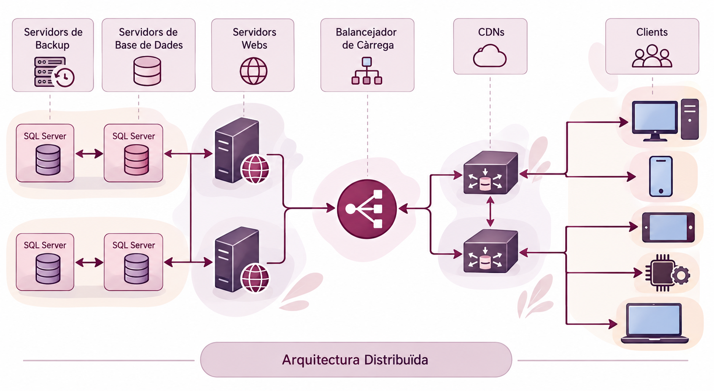
Les preguntes que ha de respondre un administrador
Aquestes són les preguntes que intentareu respondre durant tota l’assignatura.
Problemes més comuns servidors (I)
- Qui i com accedeix a la informació?
- Determinar qui (usuari, procés o servei) pot accedir a quins fitxers i directoris i com ho pot fer (lectura, escriptura, execució).
- Permisos, ACLs, polítiques de seguretat.
- Com protegeixo la informació?
- Determinar com protegir la informació sensible i confidencial.
- Xifratge, contrasenyes, autenticació, autorització, auditoria, backups.
- Com asseguro el sistema?
- Protegir el sistema contra atacs i amenaces.
- Firewall, IDS/IPS, antivirus, actualitzacions, patches, hardening.
Problemes més comuns servidors (II)
- Com puc saber si el client és qui diu ser?
- Autenticar els usuaris i els dispositius.
- Contrasenyes, certificats digitals, autenticació multifactorial.
- Quins avantatges/inconvenients té un disseny respecte a un altre?
- Determinar quin disseny és més adequat per a les necessitats de l’empresa.
- Escalabilitat, rendiment, seguretat, disponibilitat, fiabilitat.
- Com asseguro el bon funcionament?
- Garantir que el sistema funcioni correctament i sense problemes.
- Monitorització, alertes, backups, redundància, tolerància a fallades.
Problemes més comuns servidors (III)
- Com dissenyo polítiques i plans d’emergència si tot falla?
- Preparar-se per a situacions d’emergència i desastres.
- Plans de contingència, plans de recuperació, plans de resposta a incidents.
- Com analitzo post-mortem les causes d’un atac?
- Identificar les causes d’un atac i prendre mesures correctives.
- Anàlisi forense, auditoria, millora contínua.
Del concepte a la infraestructura real
Sistema → Servei → Servidor → Rack → CPD
Què és un centre de dades?
És una instal·lació que allotja un conjunt de servidors i equipament de xarxa (recursos heterogenis) per proporcionar recursos informàtics a diverses aplicacions i serveis (càrregues de treball diverses).
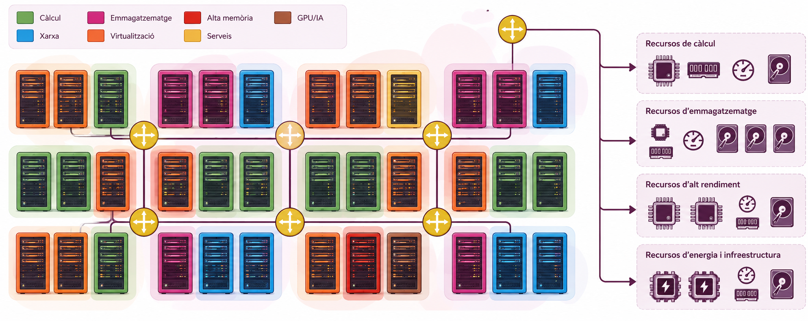
Què és un rack?
Un rack és una estructura metàl·lica que allotja servidors, switches, routers i altres equips informàtics en un centre de dades.
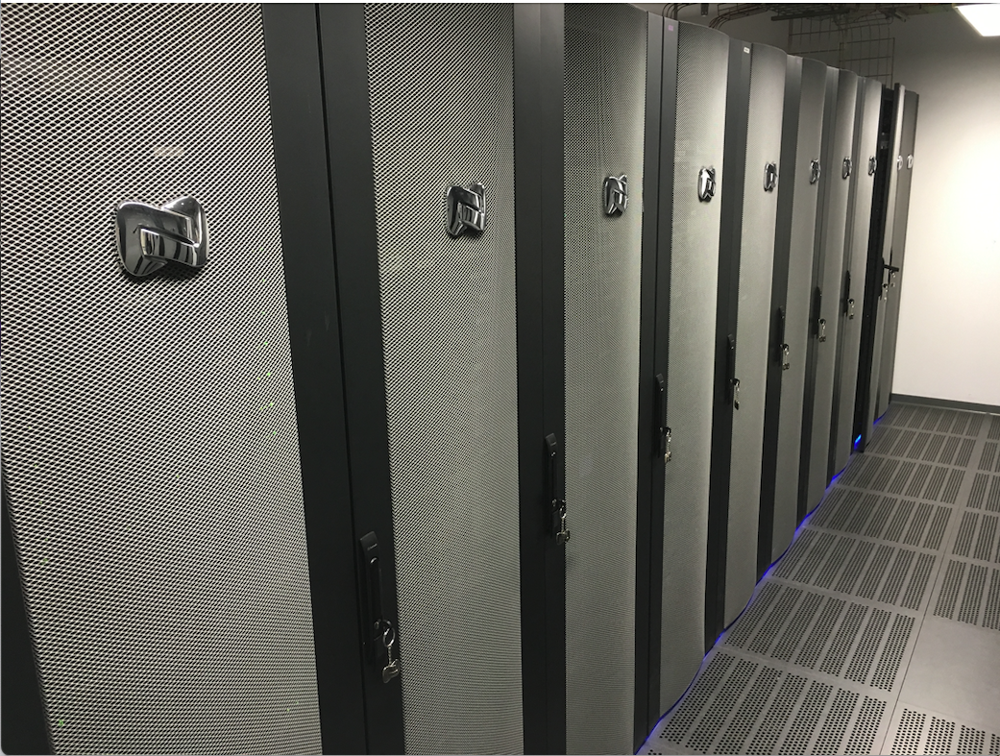
Exemple de racks
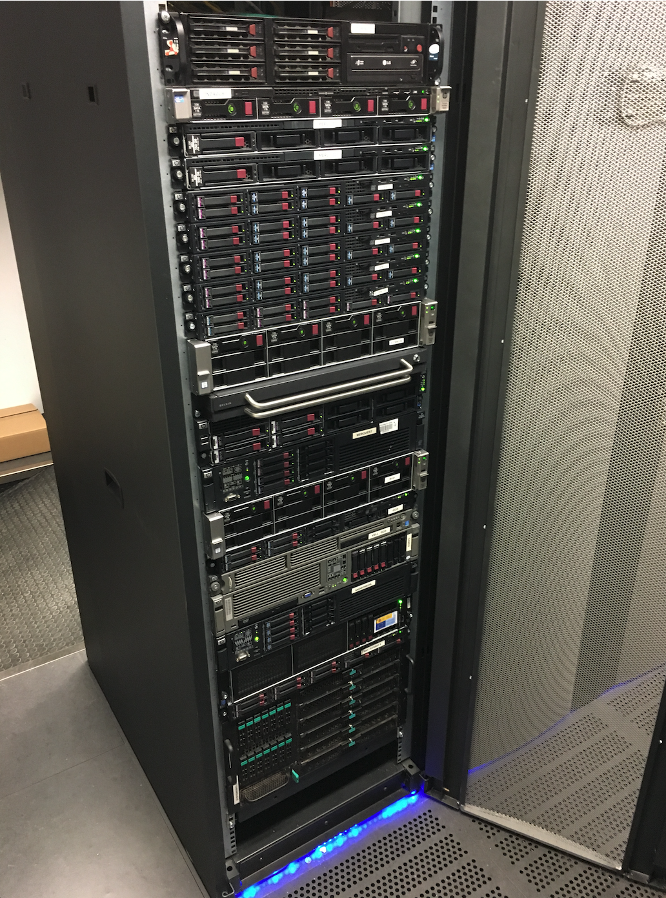
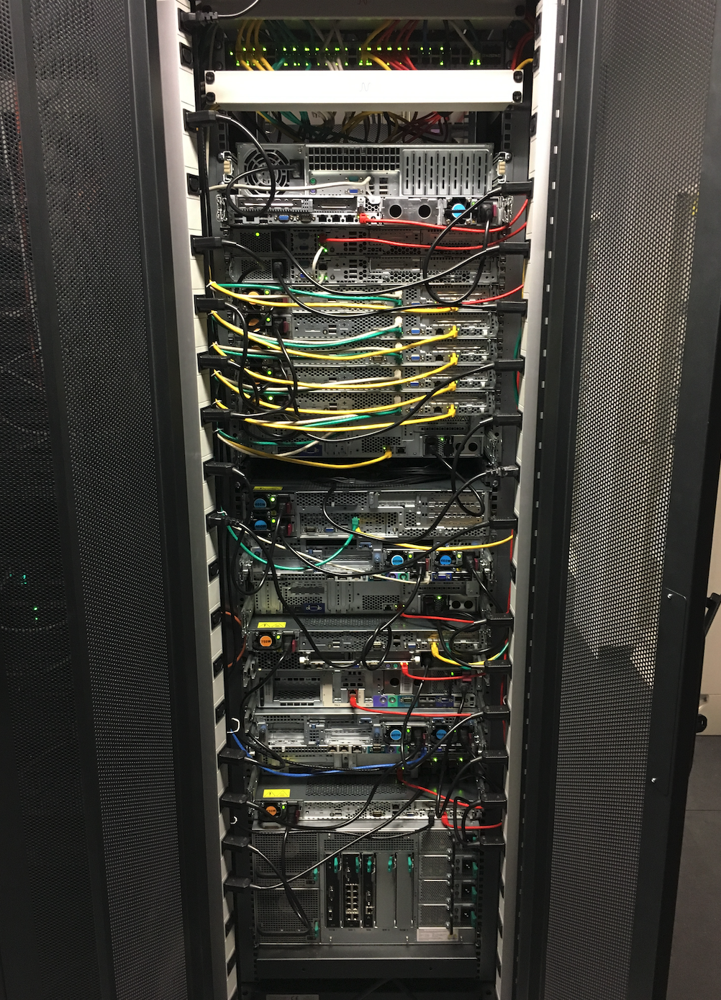
Exemple de servidor
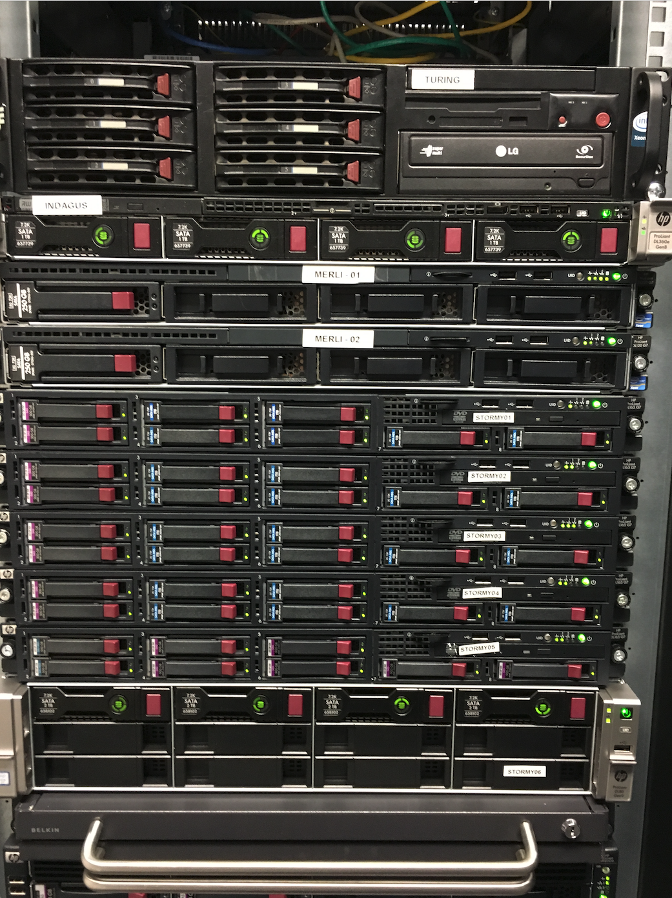
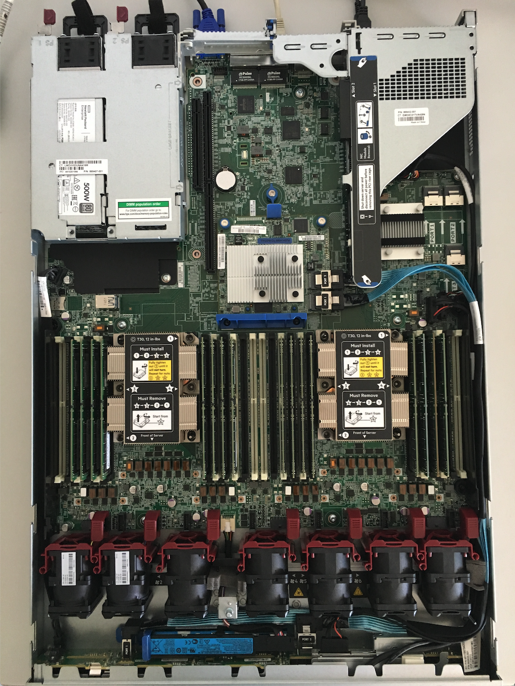
Què és un switch?
Un switch és un dispositiu de xarxa que connecta diversos equips informàtics per permetre la comunicació entre ells.
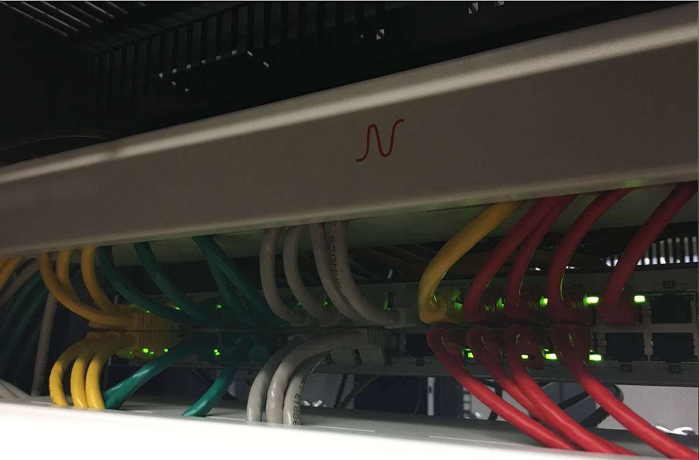
Disseny de sistemes informàtics
Característiques d’un sistema
- Simplicitat
- Mantenibilitat
- Escalabilitat
- Seguretat
- Fiabilitat
- Disponibilitat
- Rendiment
- Facilitat d’ús
(Més endavant treballarem també l’observabilitat: la capacitat de saber què està passant dins d’un sistema.)
Què és l’escalabilitat?
L’escalabilitat és la capacitat d’un sistema per gestionar un augment de la càrrega de treball sense afectar el rendiment.
- Vertical: augmentar la capacitat d’un servidor afegint més recursos (CPU, memòria, disc).
- Horitzontal: augmentar la capacitat d’un sistema afegint més servidors.
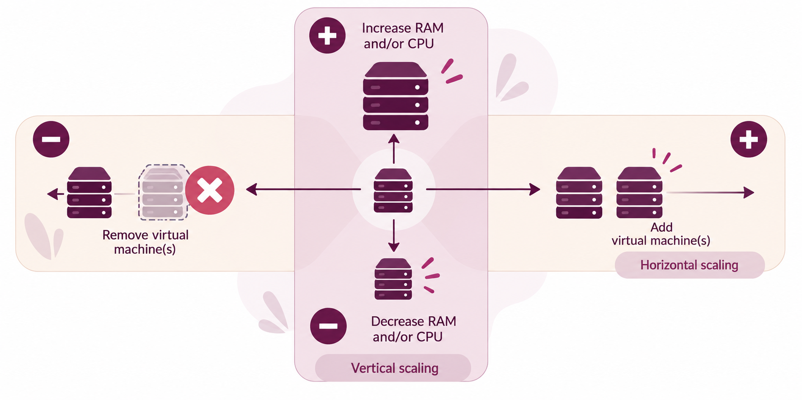
El cloud computing permet adaptar la capacitat disponible a la càrrega de treball real, pagant només pels recursos que s’utilitzen en cada moment.
Què és la fiabilitat?
La fiabilitat és la capacitat d’un sistema de complir la seva funció durant un període determinat sense fallar, sota unes condicions de funcionament especificades.
El MTBF (Mean Time Between Failures) és una mesura habitual per caracteritzar el comportament de sistemes reparables.
Definició estadística: el MTBF és el temps mitjà entre fallades del procés de fallades considerat.
Estimació a partir de dades observades:
\[ \widehat{MTBF} = \frac{\text{temps total de funcionament}} {\text{nombre de fallades}} \]
Aquesta fórmula és un estimador empíric, no la definició formal del MTBF.
Si durant 10.000 hores de funcionament observem 10 fallades:
\[ \widehat{MTBF} = \frac{10.000}{10}=1.000\ h \]
Això descriu el comportament mitjà observat; no significa que la propera fallada es produirà d’aquí a 1.000 hores.
Redundància i tolerància a fallades
Algunes estratègies habituals són:
- Cold standby: la reserva no està activa; cal iniciar-la o preparar-la després de la fallada.
- Warm standby: la reserva està parcialment preparada.
- Hot standby / active-passive: la reserva està preparada per assumir ràpidament el servei.
- Active-active: diverses instàncies donen servei simultàniament.
HA, DR i Fault Tolerance
- Redundància és un mecanisme de disseny
- HA, DR i FT són conceptes més específics sobre com volem respondre a les fallades.
| Concepte | Objectiu | Exemple |
|---|---|---|
| HA — Alta Disponibilitat | Minimitzar la interrupció del servei | Failover entre instàncies dins d’un entorn |
| DR — Disaster Recovery | Recuperar el servei després d’un desastre | Recuperació des d’una altra ubicació |
| FT — Fault Tolerance | Continuar funcionant davant d’una fallada | Components redundants amb continuïtat perceptiblement ininterrompuda |
Redundància i MTTR
La redundància pot reduir el MTTR efectiu percebut pel servei o, en una arquitectura tolerant a fallades, evitar que una fallada provoqui indisponibilitat.
| Estratègia | Ordre de magnitud de la interrupció 1 | Efecte sobre el servei |
|---|---|---|
| Cold standby | minuts → hores | Cal preparar/iniciar la reserva |
| Warm standby | segons → minuts | Reserva parcialment preparada |
| Hot standby / active-passive | segons → minuts | Failover ràpid |
| Active-active | segons → gairebé zero | El servei pot continuar mentre es redistribueix la càrrega |
Què és la disponibilitat? (I)
La disponibilitat d’un sistema es refereix a la seva capacitat per estar operatiu i accessible per als usuaris durant un període de temps determinat.
Atenció al terme «disponibilitat»: aquí parlem de la disponibilitat del servei com a proporció de temps operatiu. En el model CIA, Availability és una propietat de seguretat: la informació i els serveis han d’estar accessibles quan són necessaris.
La disponibilitat depèn de dues magnituds: el MTBF (com de sovint falla el sistema) i el MTTR (Mean Time To Repair, com de ràpid es repara). Un sistema pot fallar sovint però ser molt disponible si es repara gairebé instantàniament, i viceversa. Per exemple, si un sistema té un MTTR de 2 hores, això vol dir que, de mitjana, es triga 2 hores a reparar-lo després d’una fallada.
\[ Disponibilitat = \frac{Temps\ de\ funcionament}{Temps\ de\ funcionament + Temps\ de\ reparar} \]
Què és la disponibilitat? (II)
Amb MTBF = 999 h i MTTR = 1 h:
\[ A = \frac{999}{999+1} = 99,9\% \]
99,9% ≠ 99,99%. Quants minuts d’indisponibilitat anual implica cadascun?
Alguns serveis cloud ofereixen SLA del 99,99% o superior, segons el servei contractat i les condicions concretes. Si el proveïdor no compleix el SLA acordat, el contracte pot establir compensacions, sovint en forma de crèdits de servei.
Principi de disseny: Keep It Simple (KISS)
La complexitat és un cost operatiu: cada component, dependència i excepció afegeix configuració, punts de fallada i càrrega de manteniment.
Com es tradueix en sistemes?
- Prefereix mecanismes estàndard abans que solucions pròpies si resolen el mateix problema.
- Redueix components i dependències que no aporten valor.
- Fes explícita la configuració i evita passos manuals ocults.
- Automatitza allò repetitiu, però sense introduir una plataforma més complexa que el problema.
- Documenta les decisions i els casos excepcionals.
Per a dos servidors, pot ser més mantenible una configuració estàndard + una eina d’automatització que introduir una plataforma d’orquestració completa sense necessitat real.
KISS no vol dir fer-ho simple a qualsevol preu : vol dir evitar complexitat que no està justificada pels requisits.
Eines i tecnologies
Del problema a l’eina
| Problema | Categoria | Exemples |
|---|---|---|
| Aïllar recursos | Virtualització / Hypervisor | VMs, Contenidors |
| Consum sota demanda | Cloud Computing | IaaS, PaaS, SaaS |
| Configurar molts servidors | Configuration management | Ansible, Puppet, Chef |
| Definir infraestructura amb codi | Infrastructure as Code | Terraform, CloudFormation |
| Saber què passa al sistema | Monitoring / Logging | Nagios, Zabbix, Prometheus |
| Construir i desplegar codi | Delivery pipeline (CI/CD) | Jenkins, GitLab CI |
| Protegir la xarxa | Security tooling | PfSense, Suricata, Snort |
| Escalar contenidors | Container orchestration | Kubernetes, Docker Swarm |
Què significa administrar un sistema?
Garantir que el servei fa el que ha de fer
- Funcionalitat → requisits i proves
- Rendiment → latència, throughput, capacitat
- Disponibilitat → uptime i SLO
- Seguretat → confidencialitat, integritat i disponibilitat
Fer-ho sostenible en el temps
- Fiabilitat → reduir i tolerar fallades
- Mantenibilitat → corregir i evolucionar
- Observabilitat → saber què està passant
- Automatització → reduir treball manual i errors
Dissenyar → Mesurar → Operar → Aprendre → Millorar
Un sistema ben administrat no és aquell que mai falla.
És aquell del qual sabem detectar, gestionar i aprendre de les fallades.
Què ens emportem?
Administrar sistemes és convertir requisits en serveis que puguem mesurar, operar, protegir, mantenir i millorar.